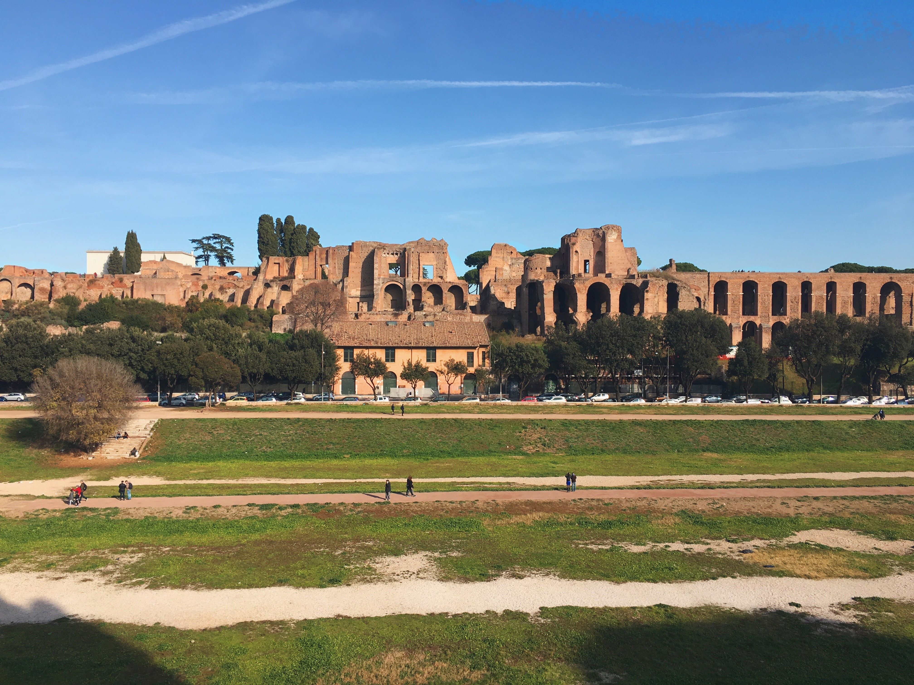

Er zijn nog veel gebouwen uit de Romeinse tijd overgebleven. Daarom zijn er nu veel bezienswaardigheden in Rome. Een aantal zijn:
- Het Colosseum
- Circus Maximus
- Forum Romanum
- Het Pantheon
 Het Colosseum
Het Colosseum
Het Colloseum was het grootste amfitheater in het Romeinse Rijk. De officiële naam van het amiftheater was Flavium Amphitheatrum. De naam Colosseum betekent bij de Colossos, dat was een standbeeld van Nero van veertig meter hoog. Het Colosseum werd gebouwd door keizer Vespasianus in 72. Het Colosseum was pas af in 80, toen de zoon van Vespasianus, Titus, keizer was. Het Colosseum is enorm groot, het is 188 bij 156 meter en het Colloseum is 50 meter hoog. Door deze enorme grootte waren er wel 50.000 zitplaatsen. In de ochtend werden er normaal wilde dieren gevechten gehouden. In de middagpauze werden er gevangenen voor de wilde dieren gegooid. Het hoogtepunt van de shows waren de gladiatorengevechten die in de middag werden gehouden.
Het Circus Maximus
Het Circus Maximus was het oudste en grootste circus van Rome. De bouw van het circus begin al in de tijd toe Rome een republiek was. Het Circus Maximus was gebouwd in het dal tussen de heuvels Palatijn en Aventijn. Later werd het Circus Maximus door verschillende keizers uitgebreid. De renbaan was 600 meter lang en 225 meter breed. Er konden 150.000 toeschouwers plaatsnemen in het Circus Maximus. Er is nu weinig van het Circus over, omdat het werd afgebroken om kerken en paleizen te bouwen. Het Circus Maximus werd voornamelijk gebruikt voor wagenrennen, maar er werden ook gladiatorengevechten en atlethiekwedstrijden gehouden. Bij het wagenrennen waren er vier temas, Rood, blauw, groen en wit. Ieder team vertegenwoordigde een plolitieke stroming. De wagenrenners moesten zeven rondjes maken.